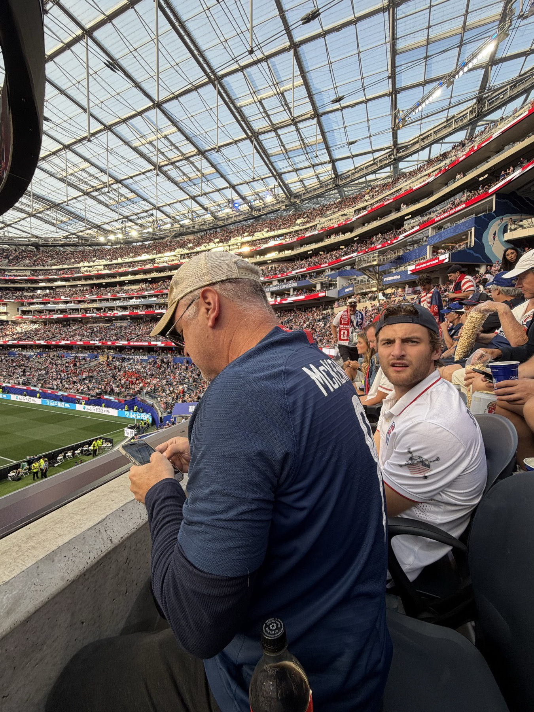

USMNT Lore.
If you've ever wondered why a goal in a USA game feels different than a goal in a USA game in any other sport, the answers are in here. The moments. The losses. The faces. The reason a fifty-year-old man cried watching Pulisic score against Iran in 2022.
Estadio Azteca · photo AnatGutman · CC0 · Wikimedia Commons
The moments that made this team.
The first World Cup, in Uruguay. The United States reaches the semifinals, beating Belgium and Paraguay before losing to Argentina. It is the deepest USMNT run in tournament history. Almost 100 years later, we are still trying to match it.
Belo Horizonte, Brazil. Group play. USA 1, England 0. The greatest upset in World Cup history, scored by a Haitian-born dishwasher named Joe Gaetjens with a glancing header off a Walter Bahr long shot. The English press is rumored to have thought the wire-service score was a typo. Forty years pass before USMNT qualifies for another World Cup.
Italy 1990. USA loses all three group games. The result on the field is rough. The result for the soccer infrastructure is everything. The qualification to host 1994 is on the line and the USA delivers it. The program begins to build.
The biggest World Cup in attendance history at the time. USA wins one, draws one, loses one in group play. Then a 1-0 loss to Brazil in the R16 at Stanford on July 4th, 1994. The deepest USMNT run on home soil in the modern era. The country falls in love with the sport.
South Korea / Japan. USA beats Portugal 3-2 in the opener. Draws South Korea. Beats Mexico 2-0 in the R16 (the most psychologically important game in USMNT-Mexico history). Loses 1-0 to Germany in the QF on a handball that wasn't called. Landon Donovan, Brian McBride, Claudio Reyna, DaMarcus Beasley, Tim Howard. The team that the rest of the program is measured against.
Bloemfontein, South Africa. Spain had not lost in 35 international matches. USA beats them with a Jozy Altidore goal and a Clint Dempsey finish. The single best result in modern USMNT history. The team that scared the world.
If you watched it live, you remember exactly where you were. USA needed a goal in the last group game to advance. Donovan tapped in a rebound at the death. The video of fan reactions across the country was the first thing that made non-soccer Americans understand why the rest of the world cried at this sport. This is the single most-watched goal in American soccer history.
USA beats Ghana, draws Portugal in a 2-2 that ended on a 95th-minute equalizer, loses to Germany, advances. R16 vs Belgium. Tim Howard makes 16 saves in a 2-1 extra-time loss, a single-match World Cup record since FIFA started tracking saves in 1966. "I Believe That We Will Win" becomes the national chant.
October 10, 2017. USA needs a draw against Trinidad and Tobago to qualify for the 2018 World Cup. They lose 2-1. For the first time since 1986, USMNT fails to qualify for a World Cup. The team's identity ruptures. Jurgen Klinsmann was already gone. Bruce Arena resigns. The program enters its hardest reset.
Qatar. Group stage finale. USA needs a win against Iran to advance. Pulisic scores the only goal in the 38th minute and is knocked out cold doing it. He stayed in the locker room and his teammates won the R16 ticket. They lose 3-1 to Netherlands in the R16, but the program is back. The "Golden Generation" of Pulisic, McKennie, Adams, Reyna, Weah is locked in.
September 2024. Mauricio Pochettino, the manager who took Tottenham to a Champions League final and who is widely respected for player development, agrees to coach the USMNT. The most credentialed manager USMNT has ever hired. A two-year identity-installation project began that day. We see the results in June.
The Golden Generation's home World Cup ended in the Round of 16, against Belgium. Belgium turned out to be the side that pushed champions Spain hardest all summer, a 2-1 quarterfinal that nobody else came closer than. It was the best World Cup this program has had on home soil since 1994, and it still hurt, and both of those are true. The 1930 semifinal still stands. 2030 is the next swing.
July 1, Levi's Stadium. USA 2, Bosnia and Herzegovina 0. Folarin Balogun scores, then walks, the first man to score and see red in the same World Cup knockout game since Zidane in the 2006 final. Ten men hold the line for the last half hour. The first USMNT knockout win since 2002, and only the second ever. This is the game the program will tell its children about.
One in each knockout round. The dagger that sealed Bosnia, the strike that briefly leveled Belgium. Two free-kick goals in a single World Cup, a thing no American had ever done. Dead balls became a weapon, and Malik Tillman became lore.
Two goals against Paraguay in the opener. The first American to score multiple goals in a World Cup game since 1930. Ninety-six years between braces. The wait ended at home.
48 teams. 104 matches. 6,810,966 people in the stands, nearly double the record the USA set in 1994. It ended at MetLife: Spain 1, Argentina 0 in extra time, Ferran Torres in the 106th. Rodri took the Golden Ball, Mbappé took the Golden Boot with 10 goals, and Spain conceded exactly once all tournament. The biggest World Cup in history happened here, and we were in it.
USMNT generational icons.
USMNT's all-time leading scorer for two decades. 57 international goals. The 2010 Algeria goal is the single most important moment in modern USMNT history.
16 saves vs Belgium in 2014. Everton legend. The face of the program through the 2010s. "Made everyone in America feel like they had a chance."
57 international goals (tied with Donovan). The fastest USMNT goal in World Cup history (29 seconds vs Ghana, 2014). Carried the team through the post-Donovan transition.
Captain America. Ream wears the armband; Pulisic carries the expectations. The Golden Generation's headline. Bears the weight of the 2026 hopes more than anyone else on the roster. In 2026 he scored zero goals, created the opening rout, got hurt twice, and the building still believed every time he touched it.
